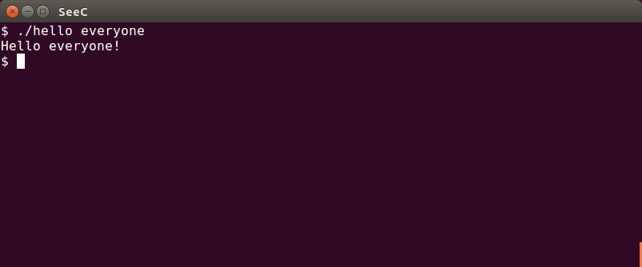
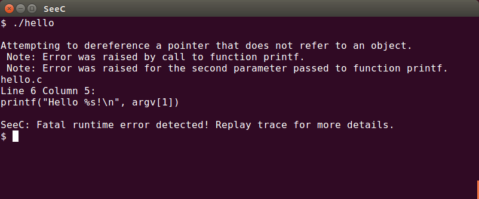

Compiling programs with SeeC is achieved using the seec-cc program. seec-cc is a slightly modified version of the clang compiler driver, which is itself designed to act as a "drop in" replacement for cc. Thus if you are familiar with using cc, then using seec-cc should be straightforward.
Note that the screenshots in this guide were taken on a Linux system, but the use and behaviour of SeeC should be identical on OS X.
We can compile a single C99 source code file into an executable program as follows:seec-cc -std=c99 -o <output filename> <input filename>
If the compilation is successful then an executable file will be generated. In the following image we can see that the executable file hello is generated by compiling hello.c:
In general, seec-cc should handle the same options as the cc driver. For example, we can enable many warnings using -Wall, treat warnings as errors using -Werror, and warn about language extensions using -pedantic:
We execute the compiled program just as we would expect:

However, two additional things happen when we execute a program compiled by seec-cc: the program's execution is recorded into an execution trace, and the program automatically checks for runtime errors. In the following image we can see what happens when a runtime error is detected: the program prints a description of the error and the location of the source code responsible for the error. The program's execution is terminated.

The error is also stored in the execution trace. This is useful for debugging more complicated errors, because the execution trace contains information about everything that occurred during the program's execution (and thus everything that may have contributed to the error). In the image below we can see the execution trace hello.seec:
Viewing execution traces provides information about viewing such execution traces.